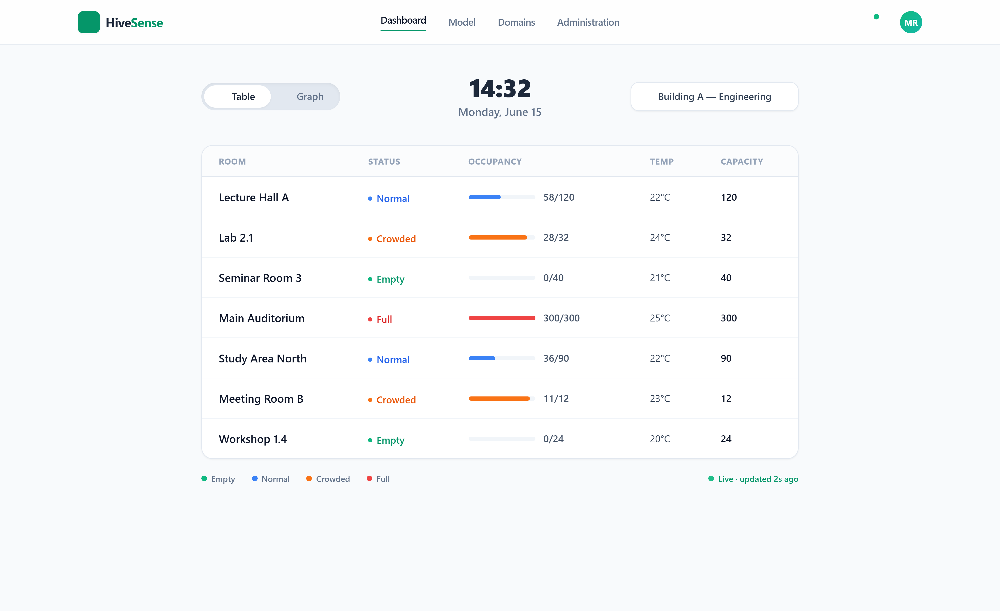
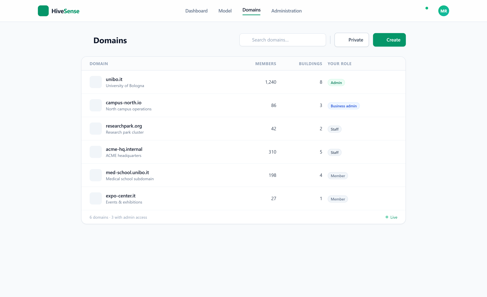
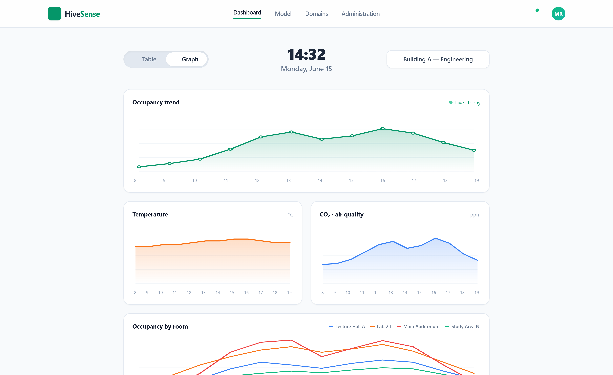

/
ASW Report
In questa pagina
ASW Report
CrowdVision: Report di Applicazioni e Servizi Web
Autori: Ettore Farinelli · Nicolò Ghignatti · Mounir Samite Corso: Applicazioni e Servizi Web · Data: Giugno 2026
CrowdVision è un’applicazione web che fa da gemello digitale di un edificio: prende i dati che arrivano in continuazione dai sensori sparsi nelle stanze: quante persone ci sono, che temperatura c’è, e li mostra in tempo reale su un modello 3D navigabile. Chi gestisce lo spazio (un’università, un museo, un centro congressi) può così vedere a colpo d’occhio quali stanze si stanno riempiendo, dove fa troppo caldo, e ricevere un avviso quando qualcosa supera una soglia, senza dover stare incollato a un monitor.
Una nota su questo report
Questo è il report per l’esame di Applicazioni e Servizi Web: ci concentriamo sugli aspetti web del progetto: le API REST, la comunicazione in tempo reale, il frontend con il 3D, l’autenticazione. La parte di processo (DevOps, CI/CD, design domain-driven nel dettaglio) è raccontata nel report di Software Process Engineering, e tutta la documentazione completa vive nella Developer Guide e nella User Guide. Dove un argomento merita più spazio, lo diciamo e rimandiamo lì.
1 · Introduzione
L’idea di CrowdVision nasce da un problema piuttosto concreto: in un edificio grande, pensiamo a una sede universitaria, è difficile sapere in questo momento quanto è piena un’aula studio, se la biblioteca è invivibile, o se una sala riunioni è libera. Di solito lo si scopre andandoci di persona. Noi volevamo che bastasse aprire una pagina web.
Il sistema fa quindi tre cose, tutte in tempo reale:
- Raccoglie il flusso continuo di letture (conteggio persone, temperatura) che i sensori delle stanze inviano, anche centinaia al minuto;
- Le mostra sopra un modello 3D dell’edificio, dove una stanza si “riempie” o si “scalda” a schermo mentre i dati arrivano, e su tabelle e grafici per chi vuole i numeri;
- Avvisa le persone giuste quando una lettura supera una soglia (stanza troppo affollata, troppo calda), sia con una notifica nell’app sia con una push sul telefono quando l’app è chiusa.
Sopra a tutto c’è la gestione degli accessi: il sistema è multi-tenant, cioè una sola installazione serve più organizzazioni diverse (“domini”), e ogni utente vede soltanto i dati delle organizzazioni di cui fa parte. Tra i requisiti della proposta iniziale c’era anche un assistente basato su LLM a cui chiedere a parole lo stato dell’edificio: l’abbiamo realizzato, e ne parliamo nella sezione 3.9.
Più che una semplice CRUD, CrowdVision è un’applicazione data-intensive: la parte interessante non è salvare un record, ma spostare i dati: ingerirli, validarli contro le soglie, filtrarli per edificio e farli arrivare al browser nel giro di un attimo. È su questo che abbiamo speso la maggior parte del lavoro.
2 · Requisiti
2.1 Requisiti utente
Gli utenti finali del sistema non sono tutti uguali: ci sono persone che gestiscono l’edificio e persone che lo abitano. Abbiamo individuato quattro figure, e da ognuna ci aspettiamo cose diverse:
| Utente | Cosa si aspetta dal sistema |
|---|---|
| Utente standard (studente, visitatore) | Vedere se la stanza che gli serve è libera o affollata, senza dover installare niente, dal browser del telefono. |
| Membro dello staff (sicurezza, manutenzione) | Tenere d’occhio la vista live, ricevere gli avvisi quando una stanza sfora, e tenere aggiornati nome e dati delle stanze. |
| Amministratore di dominio (facility manager) | Caricare la struttura dell’edificio, gestire chi entra e con quale ruolo, decidere soglie e politiche di notifica. |
| Amministratore di piattaforma | Gestire l’intera installazione multi-tenant. |
In concreto, un utente del sistema deve poter:
- accedere a un’area riservata e vedere solo gli edifici delle organizzazioni a cui appartiene;
- visualizzare l’edificio su un modello 3D che si aggiorna da solo mentre i dati arrivano;
- consultare i dati anche come tabelle e grafici storici, scegliendo quali metriche vedere;
- ricevere notifiche in tempo reale e push quando una stanza supera una soglia;
- (per gli amministratori) caricare la descrizione di un edificio e modificarne le stanze a caldo, senza chiamare uno sviluppatore.
2.2 Requisiti funzionali
- Registrazione e login di un utente, con sessione gestita tramite token;
- Gestione dei domini (organizzazioni), con inviti, ruoli e sottodomini;
- Caricamento di un edificio da una descrizione JSON (stanze, coordinate, dimensioni) e creazione automatica del gemello digitale;
- Modifica a runtime delle stanze: nome, colore, capienza, temperatura massima;
- Ingestione delle letture dei sensori (conteggio persone, temperatura) via HTTP, validate contro il modello prima di entrare nel sistema;
- Valutazione delle soglie su ogni lettura e generazione di un avviso quando vengono superate;
- Distribuzione in tempo reale delle letture al frontend tramite WebSocket;
- Invio di notifiche push (anche a browser chiuso) tramite il protocollo Web Push / VAPID;
- Configurazione della dashboard: scelta e ordinamento delle metriche mostrate per ogni edificio.
- Assistente in linguaggio naturale: un agente LLM a cui chiedere in italiano lo stato di un edificio o come funziona la piattaforma, rispondendo solo sui dati che l’utente ha il diritto di vedere.
2.3 Requisiti non funzionali
- Tempo reale. Una lettura presa da un sensore deve arrivare allo schermo dell’operatore in pochi istanti, non al refresh manuale. È il requisito che ha guidato quasi tutte le scelte tecniche.
- Scalabilità. La sfida non è tanto il browser che disegna un piano o un campus, perché quella è una questione di prestazioni, quanto il fatto di essere un’applicazione multi-tenant: una sola installazione gestisce più organizzazioni, ognuna con più edifici, e ogni edificio con il suo flusso di dati dai sensori da ingerire, validare e distribuire. Tenere in piedi tutto questo contemporaneamente è complesso, e ci ha spinti verso parti che possono scalare in modo indipendente.
- Sicurezza e isolamento. I dati di un’organizzazione non devono mai finire sotto gli occhi di un’altra; l’accesso alle API va protetto con autenticazione e autorizzazione.
- Usabilità. L’interfaccia deve essere comprensibile anche a chi non è tecnico, e utilizzabile da dispositivi diversi (responsive).
- Estendibilità. Aggiungere un nuovo tipo di lettura (per dire, qualità dell’aria) non deve obbligare a rifare tutto.
3 · Design e architettura
3.1 Metodologia di design
Per il design delle interfacce abbiamo seguito un approccio User Centered Design con utenti “virtualizzati”: prima di scrivere codice abbiamo individuato gli utenti target e costruito delle personas con i loro scenari d’uso (le riportiamo nella sezione 3.8), e da lì abbiamo capito quali funzionalità servivano davvero e quali erano superflue.
Il lavoro è stato organizzato in modo iterativo e incrementale, con uno spirito vicino ad AGILE: piccoli giri di sviluppo in cui sceglievamo cosa implementare in base alla priorità, lo costruivamo e lo testavamo. Nello scrivere sia il codice sia le interfacce abbiamo cercato di stare attaccati ai principi KISS e DRY, cioè scegliere la soluzione più semplice che funziona e non ripetere due volte la stessa cosa, e ai principi del responsive design per l’accessibilità da dispositivi diversi.
Le interfacce sono state disegnate per intero su Figma come mockup ad alta fedeltà prima di toccare il frontend, così da fissare linguaggio visivo, navigazione e gerarchia delle informazioni quando cambiare idea costava ancora poco.
3.2 Architettura del sistema
L’architettura aderisce al modello REST: abbiamo identificato le entità del dominio e le abbiamo esposte come risorse. Le principali sono:
| Entità | Cosa modella |
|---|---|
| Account | L’utente del sistema, con le sue appartenenze (memberships) alle varie organizzazioni. |
| Domain | Un’organizzazione (es. un ateneo), con i suoi ruoli, inviti e sottodomini. |
| Building | Un edificio e le sue stanze, con geometria (coordinate e dimensioni) e metadati. |
| Signal (lettura) | Una singola lettura di un sensore, immutabile, con timestamp, stanza e valore. |
| Threshold | Le soglie (capienza, temperatura massima) di un edificio, con override per stanza. |
| Notification / Alert | Un avviso generato quando una lettura supera una soglia. |
A differenza dei progetti d’esempio “classici”, un backend monolitico e un frontend, abbiamo scelto un’architettura a microservizi event-driven, con il frontend completamente separato dal backend e i servizi isolati l’uno dall’altro. Ogni servizio possiede un pezzo di dominio e il proprio database (database-per-service): nessun servizio legge il database di un altro, i dati attraversano un confine solo via API o via evento. Questo ci permette di scalare le parti in modo indipendente e di tenere separati i dati per costruzione.
| Servizio | Ruolo | Stack |
|---|---|---|
| auth-service | Identità, account, domini, token | Node.js / Express + MongoDB |
| twin-service | Edifici e stanze (il modello spaziale) | Node.js / Express + MongoDB |
| sensor-service | Ingestione letture e soglie | Node.js / Express + MongoDB |
| contracts-service | Filtro e distribuzione delle letture per edificio | Rust / Axum + MongoDB |
| notification-service | Avvisi e push delivery | Node.js / Express + MongoDB |
| socket-service | Trasporto real-time verso il browser | Node.js / Socket.IO |
| chat-service | Conversazioni persistenti e orchestrazione delle richieste all’agente | Node.js / Express + MongoDB |
| agent-service | Assistente in linguaggio naturale | Python + PostgreSQL |
| client | La single-page application | Vue 3 / Vite |
Tutto il traffico esterno entra da un unico gateway (un reverse proxy) che instrada per prefisso di URL (/auth/, /twin/, /sensor/, /chat/, /socket.io/, …): il client non parla mai direttamente con un microservizio. I servizi comunicano tra loro in due modi, scelti apposta:
- Sincrono, via HTTP, solo per le poche cose che hanno bisogno di una risposta sul momento;
- Asincrono, publish/subscribe su Redis, per il flusso continuo di letture e avvisi, dove chi produce un dato non deve mai essere rallentato da chi lo ascolta.
Il comportamento che ci stava più a cuore, una lettura del mondo reale che arriva al browser mentre succede, attraversa la catena sensor-service → contracts-service → socket-service → browser, mentre in parallelo notification-service solleva gli avvisi di soglia.
Per approfondire
Il quadro completo, i principi e la tabella di routing: Architecture Overview. I pattern di comunicazione: Communication & Data Flow.
3.3 Mockup delle interfacce
Riportiamo qui i mockup principali disegnati in fase di analisi. Rappresentano la prima versione di ciò che ci aspettavamo dal sistema, e l’interfaccia finale gli è rimasta piuttosto fedele.
Dashboard: la schermata principale per chi gestisce l’edificio: il flusso live dei sensori riversato sul gemello digitale, con le metriche di affollamento a colpo d’occhio.

Modello 3D: il cuore del prodotto: il modello tridimensionale dell’edificio su cui vengono disegnate, direttamente sulla pianta, occupazione e letture in tempo reale.

Domini: la gestione delle organizzazioni, dei campus e degli ambienti fisici. Ogni account e ogni dato spaziale è agganciato a uno di questi domini.

Grafici: la vista di analisi, dove i dati storici dei sensori e gli andamenti di affollamento vengono messi a grafico per supportare il capacity planning.

3.4 Design di dettaglio del backend
Aprendo un servizio si trova quasi sempre la stessa piccola applicazione a strati, con un flusso rigido Router → Controller → Service → Model: così chi salta da un servizio all’altro sa già dove stanno il routing, la logica e l’accesso ai dati.
- I Router dichiarano le rotte e ci appendono i middleware (autenticazione, validazione);
- i Controller sono il bordo HTTP: leggono la richiesta, chiamano i service, formattano la risposta;
- i Service contengono la logica di dominio vera e propria;
- i Model descrivono le entità e parlano con il database (via Mongoose per i servizi su MongoDB).
Tre servizi rompono lo schema apposta: il sensor-service risolve a runtime una strategia per ogni metrica, il contracts-service in Rust tiene lo stato caldo in memoria (con il database dietro per la durabilità), e il socket-service è un ponte piatto broker→WebSocket senza database. Autenticazione e gestione degli errori le abbiamo tirate fuori in middleware condivisi invece di copiarle in ogni controller.
3.5 Design pattern adottati
Durante lo sviluppo sono saltati fuori alcuni schemi ricorrenti, che abbiamo risolto con design pattern noti. I più rilevanti:
- API Gateway. Un solo punto d’ingresso (Caddy in locale, nginx Ingress in produzione) che instrada per prefisso, nasconde la topologia interna e centralizza l’accesso.
- Publish/Subscribe. Redis come message broker: chi produce un evento (es. un avviso) non deve conoscere chi lo consuma. Per aggiungere un nuovo consumatore basta iscriverlo al canale, senza toccare il produttore: è così che abbiamo tenuto il sistema estendibile.
- Strategy. Nel sensor-service, ogni metrica (persone, temperatura, …) ha la sua strategia di validazione e normalizzazione, risolta a runtime: aggiungere una metrica non richiede di riscrivere il flusso di ingestione.
- Anti-Corruption Layer. Quando un servizio ha bisogno di un concetto che appartiene a un altro dominio, lo traduce al confine invece di lasciar entrare il modello altrui.
- Stateless Trust (JWT). Vedi sezione successiva: l’identità viaggia nel token, così nessun servizio deve interrogare l’auth-service per autorizzare ogni richiesta.
3.6 Sicurezza
La sicurezza è centrale, perché nel sistema girano dati sensibili (email, credenziali, dati delle organizzazioni). Abbiamo affrontato due problemi distinti: autenticazione (chi sei) e autorizzazione (cosa puoi fare).
Per entrambi usiamo i JSON Web Token (JWT). Al login l’auth-service genera un token firmato e lo mette in un cookie httpOnly: in questo modo il token non è leggibile da JavaScript, il che ci protegge da una buona fetta degli attacchi XSS rispetto a tenerlo, per dire, nel localStorage.
Il punto interessante è cosa mettiamo nel token. Dato che ogni servizio ha il suo database e non può leggere quello dell’auth, un servizio come il twin non avrebbe modo di sapere se l’utente è amministratore di un certo dominio. La soluzione “tradizionale” sarebbe fare una chiamata HTTP all’auth a ogni richiesta, ma significa rete in più sul percorso caldo, e mal si sposa con il requisito di tempo reale. Allora incorporiamo le appartenenze (memberships) dell’utente dentro il payload del token: poiché tutti i servizi condividono lo stesso JWT_SECRET, ognuno verifica la firma in autonomia e legge i permessi dal payload, senza nessuna chiamata di rete. Il token è in pratica un linguaggio condiviso tra i servizi.
Questo approccio risolve anche un classico problema delle sessioni nei sistemi distribuiti: con le sessioni server-side, se ho n repliche dietro un load balancer devo condividere lo stato della sessione tra tutte, e l’allineamento non è istantaneo. Con i JWT lo stato non esiste: ogni replica sa validare il token da sola. L’unica accortezza è tenere il SECRET davvero segreto.
Due dettagli in più dal codice reale:
- I sensori si autenticano con un device token a lunga scadenza (~5 anni), distinto da quello degli utenti, perché un dispositivo deve poter “sparare e dimenticare” senza ri-loggarsi;
- Le rotte amministrative e alcune chiamate interne sono protette da una firma HMAC-SHA256 sul body, confrontata in tempo costante (
timingSafeEqual) per non esporre il confronto a timing attack.
3.7 Architettura del frontend
Il frontend è una single-page application in Vue 3 (con Vite come build tool e TypeScript). La struttura segue una separazione netta delle responsabilità:
- Components: divisi per area (dashboard, modello 3D, domini, grafici, admin, chat), ognuno con il suo template, stile e logica;
- Services: la comunicazione con l’esterno: chiamate REST ai servizi e gestione della connessione WebSocket per le notifiche;
- Stores (Pinia): lo stato condiviso tra i componenti (utente loggato, dati degli edifici, notifiche), così i componenti restano snelli e non si passano dati a mano;
- Router:
vue-routerper la navigazione tra le viste in base all’URL; - i18n:
vue-i18nper l’internazionalizzazione.
Il pezzo distintivo è la vista 3D: la costruiamo con TresJS (un wrapper dichiarativo di Three.js per Vue), così il modello dell’edificio è composto da componenti Vue come il resto dell’interfaccia, e si aggiorna in modo reattivo quando arrivano nuove letture dallo store. I grafici storici usano Chart.js (via vue-chartjs).
3.8 Analisi degli utenti target
Il target principale sono chi gestisce uno spazio e chi lo frequenta. Riportiamo alcune personas con i loro scenari d’uso.
Personas: Sara, facility manager Sara gestisce gli spazi di una sede universitaria e deve garantire che le aule non superino la capienza. Scenario: Sara vuole tenere sotto controllo l’affollamento in tempo reale.
- Sara accede alla piattaforma e seleziona il suo dominio;
- carica la descrizione JSON dell’edificio e ottiene il gemello digitale;
- imposta per ogni aula la capienza e la temperatura massima;
- dalla dashboard 3D vede le aule riempirsi e riceve un avviso quando una sfora.
Personas: Luca, addetto alla sicurezza Luca è spesso in giro per l’edificio e non può stare davanti a un monitor. Scenario: Luca vuole essere avvisato solo quando serve intervenire.
- Luca registra il suo telefono per ricevere le push;
- sceglie quali tipi di avviso ricevere, separatamente per ogni organizzazione;
- quando un’aula supera la capienza riceve una notifica push e va a gestirla.
Personas: Giulia, studentessa Giulia vuole solo trovare un posto dove studiare senza fare il giro di tutte le aule. Scenario: Giulia controlla al volo dal telefono.
- Giulia apre l’app dal browser del telefono (interfaccia responsive);
- vede solo gli edifici del suo ateneo;
- guarda quali aule studio sono libere e ci va a colpo sicuro.
3.9 Assistente in linguaggio naturale
Nella proposta di progetto avevamo messo, tra i requisiti, un assistente basato su LLM: l’idea era abbassare la barriera per chi non è tecnico, lasciando che chiedesse a parole “quanti posti liberi ci sono in biblioteca?” invece di andare a cercarselo tra menù e tabelle. È un requisito che abbiamo effettivamente realizzato: c’è un servizio dedicato, l’agent-service.
A differenza del resto del backend è scritto in Python (FastAPI), perché passa quasi tutto il tempo in attesa di risposte dalla rete (il provider del modello, il database, il twin-service) e uno stack asincrono regge molte richieste in volo senza bloccare un thread per chiamata. Lato web resta però un cittadino come gli altri: espone una API REST (POST /agent/ask) dietro lo stesso gateway degli altri servizi e si autentica con lo stesso JWT (cookie o Bearer), quindi eredita gratis lo “stateless trust” descritto nella sezione sulla sicurezza.
Il punto interessante è che non è un singolo prompt buttato dentro al modello, ma un ciclo di tool-calling: al modello diamo la domanda più gli schemi degli strumenti che può usare, e a ogni giro lui decide se rispondere o se chiamare uno strumento. Gli strumenti sono cinque, tutti in sola lettura: cercare nella documentazione e interrogare edifici e stanze del twin-service, così l’agente può concatenare le ricerche (risolve il nome di un edificio nel suo id, poi ne chiede le stanze) senza che noi gli si debba pre-cucinare la risposta.
Due scelte le abbiamo prese pensando proprio al web e al fatto che è un’app multi-tenant:
- L’assistente vede solo ciò che vedi tu. La ricerca nella documentazione filtra i risultati contro ruoli e domini che viaggiano nel JWT, già a livello di query SQL: un utente non recupera nemmeno un frammento che non avrebbe diritto di leggere.
- È volutamente “di nicchia”. Il prompt lo limita ai temi di CrowdVision (edifici, stanze, occupazione, come funziona la piattaforma) e gli fa rifiutare in una riga tutto il resto: niente poesie, traduzioni o domande generiche. Questo per non sprecare il budget condiviso del provider e per non trasformare un assistente di prodotto in un chatbot tuttofare.
Resta una parte di contorno rispetto al cuore real-time del sistema, ma è un requisito che era nella proposta e che abbiamo portato a casa funzionante.
Per approfondire
Il ciclo di tool-calling, la ricerca ibrida (vettoriale + full-text) e la validazione delle citazioni sono spiegati per esteso nella Developer Guide → Agent Service.
4 · Tecnologie
Il sistema è poliglotta: la maggior parte dei servizi è in Node.js, il filtro delle letture (critico per il throughput) è in Rust, l’assistente è in Python. Lato dati usiamo MongoDB per i servizi e PostgreSQL per l’agente.
| Tecnologia | A cosa serve |
|---|---|
| Node.js + Express | Backend della maggior parte dei servizi (auth, twin, sensor, notification, socket, chat). |
| Python + FastAPI | API asincrona e ciclo di tool-calling dell’agent-service. |
| Rust + Axum | Il contracts-service, dove conta la velocità nel filtrare e distribuire le letture. |
| Vue 3 + Vite + TypeScript | Il client single-page. |
| MongoDB | Persistenza dei servizi Node.js, con un database per servizio. |
| PostgreSQL + pgvector | Knowledge base dell’agente e ricerca RAG ibrida, vettoriale e full-text. |
| OpenTelemetry + Langfuse | Tracing dell’agente: chiamate al modello, strumenti, retrieval, token e costi. |
| Redis | Message broker pub/sub per letture e avvisi. |
| Socket.IO | Notifiche e dati real-time verso il browser via WebSocket. |
| Three.js / TresJS | Rendering del modello 3D dell’edificio. |
| Chart.js | Grafici dei dati storici. |
| JWT + Web Push (VAPID) | Autenticazione stateless e notifiche push a browser chiuso. |
| Docker / Kubernetes | Packaging e deploy. |
Vale la pena spendere due parole su alcune scelte.
WebSocket (Socket.IO). I WebSocket permettono una comunicazione bidirezionale e asincrona tra client e server. Servono a noi per le notifiche e i dati real-time, e superano il limite del vecchio polling (il client che ogni tanto chiede al server “c’è qualcosa di nuovo?”), che è inefficiente: con una connessione TCP persistente è il server a spingere il dato al client appena succede qualcosa. Usiamo anche un pattern di multiplexing: invece di aprire una connessione per ogni stanza, centinaia di sensori parlano con un’unica istanza del socket-service e si distinguono inserendo roomId e sensorId nel payload di ogni evento.
Redis Pub/Sub. È quello che disaccoppia i servizi: il notification-service pubblica un evento su un canale e si dimentica di chi lo ascolta; il socket-service (e domani l’agente) si iscrivono. Per aggiungere un comportamento basta un nuovo subscriber.
JWT. Come spiegato nella sezione sulla sicurezza, è ciò che ci consente di autorizzare le richieste senza stato condiviso, ed è la chiave per rendere i servizi scalabili e indipendenti.
OpenAPI / Swagger. Le API REST dei servizi sono documentate con lo standard OpenAPI, così chi le usa non deve indovinare come sono fatte: la documentazione interattiva (Swagger UI) è pubblicata insieme al resto.
Docker. È ormai lo standard de-facto per distribuire un sistema senza legarsi a una piattaforma specifica. Ogni servizio è un’immagine, e il tutto si orchestra con Docker Compose in locale e Kubernetes in produzione.
5 · Codice
Riportiamo qualche frammento che riteniamo significativo per capire come funziona il sistema.
5.1 Backend: generazione del token con i permessi dentro
Questo è il cuore dello “stateless trust”: al login l’auth-service firma un token e gli incorpora le appartenenze dell’account, così gli altri servizi potranno autorizzare leggendo il payload, senza chiamare l’auth.
export const generateStandardToken = async (payload: StandardTokenPayload) => {
const secret = getTokenSecret();
if (!secret) throw new InternalError("Missing token secrets configuration");
const account = await Account.findOne({ name: payload.accountName });
if (!account) {
throw new NotFoundError(`Account "${payload.accountName}" does not exist`);
}
return jwt.sign(
{
accountId: payload.accountId,
accountName: payload.accountName,
accountMemberships: account.memberships, // i permessi viaggiano nel token
},
secret,
{ expiresIn: "3h" },
);
};I sensori, invece, ottengono un token dedicato a scadenza lunghissima, perché un dispositivo non può ri-loggarsi a mano:
export const generateDeviceToken = (payload: DeviceTokenPayload) => {
return jwt.sign(
{
domainName: payload.domainName,
buildingId: payload.buildingId,
deviceName: payload.deviceName,
deviceType: payload.deviceType,
},
getTokenSecret(),
{ expiresIn: "1825d" }, // ~5 anni
);
};5.2 Backend: il middleware di autenticazione
Sul fronte opposto, un middleware condiviso protegge le rotte: legge il token dal cookie httpOnly, lo verifica e attacca l’account decodificato alla richiesta, che da lì in poi è disponibile ai controller. Niente sessione, niente chiamate di rete.
export const requireAuthentication = (
req: Request,
_res: Response,
next: NextFunction,
) => {
const token = req.cookies?.[COOKIE_NAME];
if (!token) {
throw new NotFoundError("Could not find token for the cookie");
}
req.account = TokenService.verifyToken(token); // verifica la firma localmente
next();
};5.3 Frontend: il servizio WebSocket
Lato client, un piccolo servizio stabilisce la connessione Socket.IO e tiene uno stato reattivo: quando arriva un evento notification, lo store si aggiorna e l’interfaccia segue da sola, senza che i componenti debbano fare polling.
import { io, type Socket } from 'socket.io-client'
import { reactive } from 'vue'
export const socketState = reactive({
connected: false,
notifications: [] as Notification[],
unreadCount: 0,
})
export const socket: Socket = io(import.meta.env.VITE_SERVER_URL || '', {
autoConnect: false,
transports: ['websocket'],
})
socket.on('notification', (data) => {
socketState.notifications.unshift({
id: Date.now().toString(),
message: data.message,
type: data.type || 'info',
timestamp: new Date(),
read: false,
})
socketState.unreadCount++ // un componente Vue mostra il badge in automatico
})Bastano poche righe perché tutta l’app reagisca a una notifica del server: è la combinazione di WebSocket sul trasporto e reattività di Vue sullo stato a darci il tempo reale “gratis” lato interfaccia.
6 · Deployment
Per il deployment usiamo Docker, che semplifica parecchio la distribuzione senza dipendenze specifiche dalla piattaforma. Ogni servizio è impacchettato in un’immagine con un Dockerfile a due stadi (uno compila, l’altro porta solo runtime e artefatto, così l’immagine finale resta leggera).
Il sistema gira in due modi, con la stessa tabella di routing:
- Docker Compose, in locale. Ogni servizio sta su due reti: una gateway-net condivisa (così il reverse proxy Caddy lo raggiunge) e una rete di database privata. Questa seconda rete rende fisicamente impossibile la violazione del database-per-service: il twin-service non ha proprio modo di raggiungere il database dell’auth.
- Kubernetes, in produzione. I servizi stateless sono Deployment, database e Redis sono StatefulSet con i loro volumi persistenti, un nginx Ingress instrada per prefisso di URL, e i
initContainerstrattengono un servizio finché il suo database non risponde. I secret vengono creati sul cluster da un.envlocale e non finiscono mai in Git.
La separazione netta tra frontend e backend ci dà modularità: il frontend è solo uno dei consumatori delle API, e domani un’app mobile potrebbe parlare con lo stesso backend senza cambiare niente.
Per approfondire
I manifest del cluster e il layering di Compose: Deployment & Kubernetes.
7 · Test
Le funzionalità sono state testate su più browser di riferimento (principalmente Chrome, ma anche Firefox ed Edge) per verificarne correttezza e portabilità, con un occhio di riguardo alle parti meno banali come la chat real-time e la sincronizzazione dei dati live sul modello 3D.
Sul fronte automatico, il frontend ha test unitari con Vitest e test end-to-end con Playwright, mentre i servizi backend portano ognuno la propria suite. Le API sono state inoltre verificate direttamente con richieste mirate (Postman) per controllarne la conformità con la specifica OpenAPI prima dell’integrazione con il client. La copertura di codice viene misurata a ogni push su master ed è pubblicata, ma per scelta non blocca mai una merge: la usiamo come indicatore, non come cancello.
8 · Conclusioni
Costruire CrowdVision è stato soprattutto un esercizio sul tempo reale: far arrivare un dato dal sensore allo schermo nel giro di un attimo ha guidato quasi tutte le scelte, dall’architettura event-driven con Redis, al trasporto via WebSocket, fino alla reattività di Vue sul modello 3D. Lungo la strada abbiamo toccato con mano parecchie tecnologie del corso e qualcuna nuova, come Rust per il servizio più critico e TresJS per il 3D, mettendole a lavorare insieme nello stesso sistema.
Se guardiamo indietro, le cose di cui siamo più soddisfatti sono tre: un’architettura a microservizi con confini tenuti onesti dall’isolamento dei database; un’autenticazione stateless con JWT che ci ha permesso di autorizzare le richieste senza stato condiviso e quindi di scalare; e un’interfaccia che mostra l’edificio com’è adesso, che resta il vero tratto distintivo del prodotto.
Esplora il sistema
La profondità implementativa è nella Developer Guide; il giro del prodotto dal punto di vista utente è nella User Guide; i contratti HTTP sono nell’API Reference.